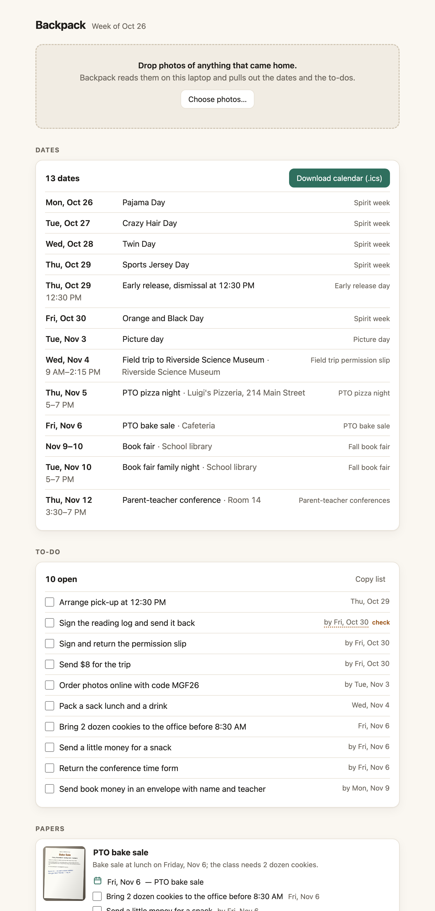
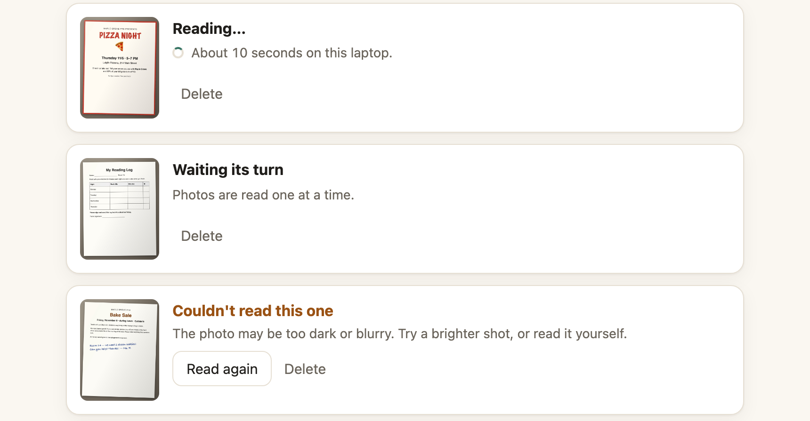
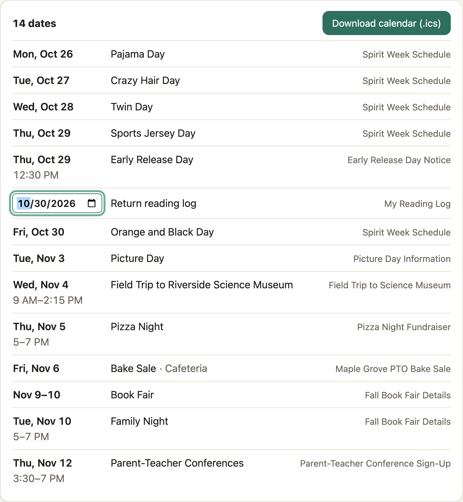
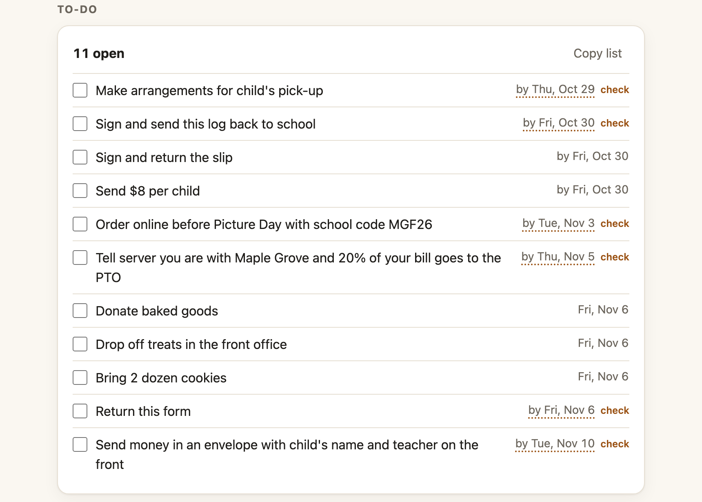

Photograph the pile, get the week.
Backpack reads the papers that come home from school with an open model on your own laptop. You get the dates, the to-dos, and the papers you can throw away.

How it works
Three steps, no account, no settings.
-

Drop the photos
Photograph each paper and drop the photos on the page. Each one takes a few seconds to read.
-

Check the guesses
A date the model had to work out is underlined and marked "check". Click any date or title to fix it.
-

Take the week
One button puts every date in your calendar. Tick the to-dos. Papers that need nothing fold into one line.
Your child's papers stay home
The photos carry your child's name, school, teacher and sometimes your address. Backpack keeps all of it on your computer.
| The page | 127.0.0.1:7313, which only this computer can open |
|---|---|
| Your photos | A folder on your disk; delete a paper and its photo goes too |
| The model | Gemma 4 in Ollama, on this computer |
| Anything else | Nothing: no account, no analytics, no update check |
Measured, not promised
Ten invented papers, gemma4:e4b, an Apple M5 Max laptop.
It missed "pack a sack lunch" and "send a little money". The larger gemma4:26b found all ten to-dos at about 3.6 seconds a paper. Handwriting and faint copies are harder, which is why every guess is marked for you to check.
Install
On a Mac with Homebrew. The model download is about 7 GB, once.
brew install go ollama && brew services start ollama
ollama pull gemma4:e4b
go install github.com/nazboyko/backpack/cmd/backpack@latest
~/go/bin/backpackThe last command opens the page. The README covers Linux, other models and the flags.